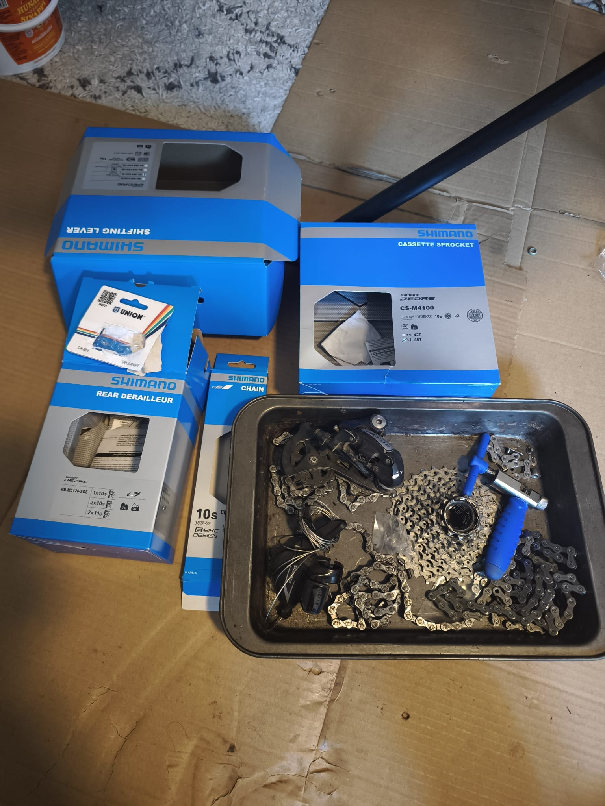
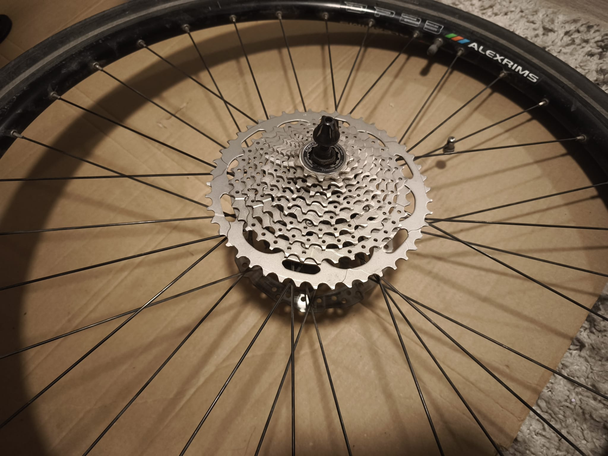
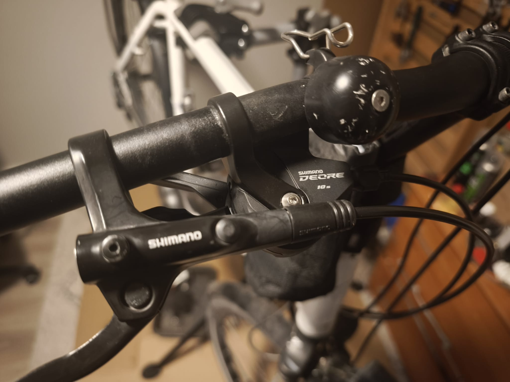
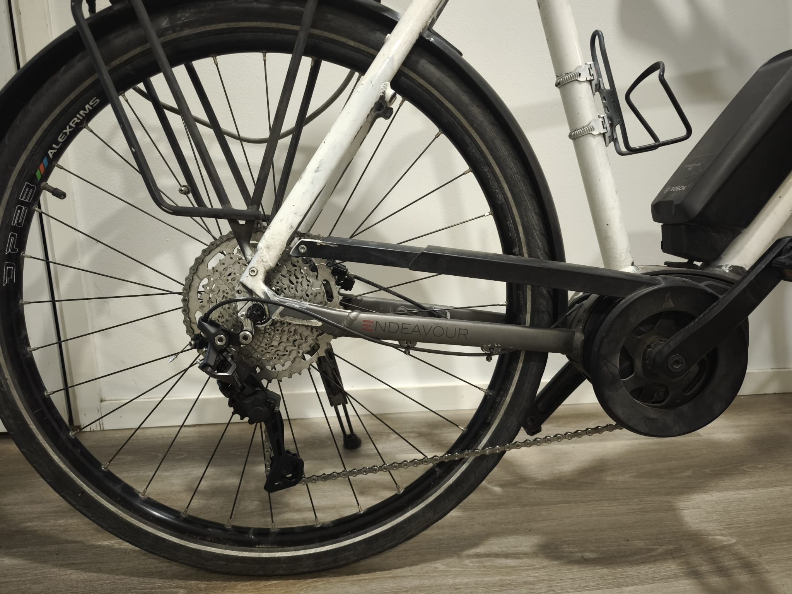
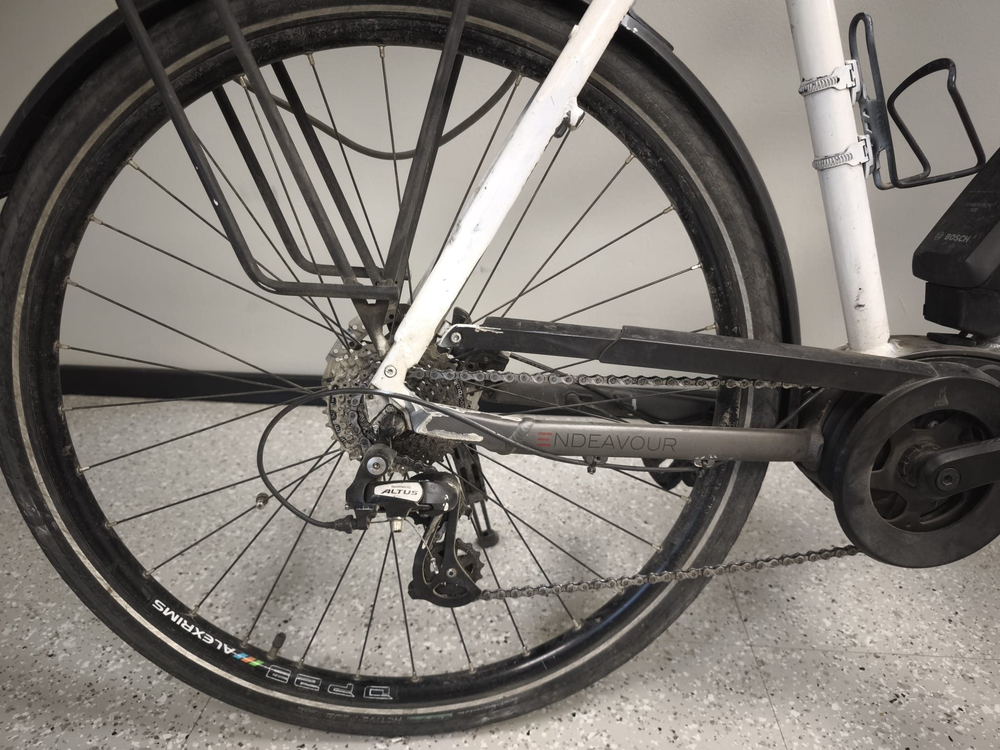

The customer requested a full drivetrain upgrade on an e‑bike, converting the system from 8‑speed to 10‑speed. The work was completed successfully after careful inspection, parts replacement, and tuning.
Original parts
- Cassette: Shimano HG41 8‑speed 11–32T
- Rear derailleur: Shimano Altus
- Chain: Unknown brand; two chains connected together with a stuck link
Customer-purchased new components
- 1 × Shimano DEORE SL‑M4100 10‑speed shift lever (right)
- 1 × Shimano DEORE RD‑M5120 10‑speed rear derailleur (SGS)
- 1 × Shimano DEORE CS‑M4100 10‑speed cassette 11–46T
- 1 × Shimano CN‑HG54 10‑speed chain (116 links)
At the beginning I was concerned the freehub might not be wide enough for a 10‑speed cassette, but fortunately the cassette fitted—this was a rare case.
Scene pictures





Inspection findings
During inspection I found the previous derailleur was not straight, likely due to an earlier accident. While removing the old parts, the derailleur hanger broke. The bike is painted and appears to be an older model, so sourcing the correct hanger was uncertain. Fortunately, I sourced a matching new hanger the next day from my former workplace. I appreciate the boss’s assistance in locating the correct part.
Installation and troubleshooting
After installing the new hanger and derailleur, the shifting could reach only up to gear 8. The frame had a slight misalignment; I carefully corrected the angle with a wrench. After adjustment, the system could reach gear 9 but not gear 10. The new 116‑link chain was too short for the 11–46T cassette.
With the customer’s approval, I purchased a Shimano CN‑E6090 10‑speed e‑bike chain (138 links) from Motonet. Upgrading an older e‑bike drivetrain can be challenging due to compatibility issues, but after two hours of debugging and fine‑tuning, all gears now shift accurately and smoothly.
Final checks
At the final stage, I checked all installed components and adjusted both brakes to eliminate friction noise. The bike is now fully ready for delivery.